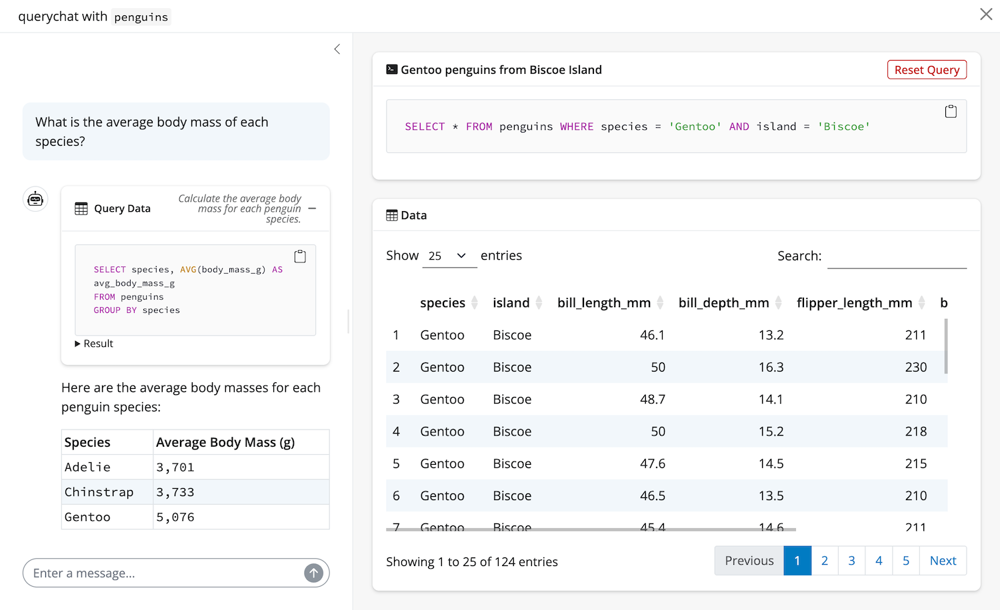

querychat combines tool calling with reactivity to not only execute SQL, but also reactively update dependent data views. Understanding how these tools work will help you better understand what querychat is capable of and how to customize/extend its behavior.
One important thing to understand generally about querychat’s tools is they are R functions, and that execution happens on your machine, not on the LLM provider’s side. In other words, the SQL queries generated by the LLM are executed locally in the R process running the app.
querychat provides the LLM access to two tool groups:
- Data updating - Filter and sort data (without sending results to the LLM).
- Data analysis - Calculate summaries and return results for interpretation by the LLM.
Data updating
When a user asks to “Show me…” or “Filter to…” or “Sort by…”, the LLM
requests a call to the update_dashboard tool with an
appropriate SQL query as input. An important constraint is that the
query must return all original schema columns (typically using
SELECT *). When called, querychat will both set a reactive
value holding the current SQL query
and execute the query to get the result. The result of query then used
to set a reactive value holding the filtered/sorted data frame. Thanks
to reactivity, this will automatically update any views depending on
this data frame, such as the data table displayed in the UI.
This tool also takes a title parameter, which is a short
description of the filter/sort operation (e.g., “Adelie penguins”).
This, also, is made available through a
reactive value for display somewhere in your app.
Here’s a basic example of this tool in action with the
$app() method. Notice how this pre-built app not only shows
the data table, but also the SQL query and title generated by the LLM
(for transparency):
querychat_app(penguins)
The other data updating tool is reset_dashboard, which
clears any active filters and returns the data table to its original
unfiltered state. The LLM typically uses this when users say “reset”,
“start over”, or “clear filters”.
Data analysis
When a user asks analytical questions like “What is the average…?”,
“How many…?”, or “Which item has the highest…?”, the LLM generates a SQL
query and requests a call to the query tool. Unlike the
data updating tools, this tool will not update any reactive values.
Instead, it will:
- Execute the SQL query
- Display both the SQL query and results in the UI
- Return the results back to the LLM for interpretation
Here’s an example of it in action:
querychat_app(penguins)